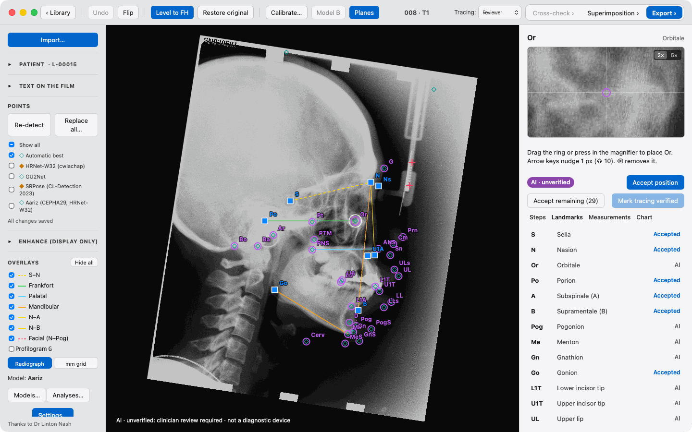

AI landmark detection
AI-assisted orthodontic landmark detection places the points for you. You stay in charge: drag any point to move it, and accept each one when you are happy.
A friendly macOS lateral cephalogram tracing app. Import an X-ray, check the landmarks AI suggests, and get a clear cephalometric analysis.

Everything you need to trace a side-on skull X-ray, in one calm window.
AI-assisted orthodontic landmark detection places the points for you. You stay in charge: drag any point to move it, and accept each one when you are happy.
See angles and distances from well-known analyses, such as Steiner, Downs, McNamara and Ricketts. Each value sits next to published norms, so you can see at a glance what stands out.
Lay films from different visits on top of each other. Watch how growth and treatment change the face over time, with a clear colour for each film.
Save a tidy PDF report of the tracing and its measurements. Export the numbers as a CSV file to open in Excel, Numbers or your statistics software.
Does the tracing fit its film? The app looks for a tracing saved on the wrong film, a mirrored tracing, or one at the wrong size, and leaves a note for you to look at. Tested once on 102 films it had never seen, it caught 981 of 1,020 planted mistakes and raised no note on 102 correct tracings. A quiet check does not mean the tracing is right: you still check every point.
A digital cephalometric tracing tool that feels at home on your Mac. No set-up guide needed.
Click Import… and choose a side-on skull X-ray. PNG, JPEG, TIFF and BMP files all work.
Go through the points one by one. Move any that are off, then accept them. The magnifier helps with fine detail.
Open the measurements to compare with norms, then click Export to save a PDF report or a CSV file.
Six steps, from the first film to a report. Tap a step to open it.
While you trace
On a Mac the modifier is ⌘. On another system the same shortcuts use Ctrl. They stay quiet while you are typing in a field.
| Keys | What it does |
|---|---|
| ⌘O | Import a film |
| K | Calibrate the scale |
| ⌘Z | Undo |
| ⌘⇧Z | Redo |
| ⌘+ ⌘− | Zoom in or out |
| ⌘0 | Fit the film in the window |
| ⌘⇧0 | Restore the original orientation |
| ⌘L | Level to Frankfort horizontal |
| ⌘⇧M | Flip horizontally |
| [ ] | Rotate by half a degree |
| ⇧[ ⇧] | Rotate by five degrees |
| P | Show or hide the planes |
| G | Show or hide the profilogram |
| ← → ↑ ↓ | Nudge the selected point |
| ⇧ + arrows | Nudge the point by ten |
| Delete or Backspace | Remove the selected point |
| Esc | Cancel what you are doing |
| Enter | When choosing words from the film text: use the words you picked |
| Space + drag | Pan the film |
Drag the film to move it. ⌥-drag (Option-drag) turns it. ⌘-click picks several points at once.
The landmark models are made by research teams, not by OpenCephAI, so they are not inside the download. In the app, click Models… to get each one straight from its authors. You read and accept the authors' licence first. The app then sets up and checks each model on your own Mac. Nothing is uploaded. The whole-film check's region finder is the author's own model, published openly on Zenodo. It is not inside the download: you get it once in Models… (121 MB), and the app checks it before it uses it.
Every paper, dataset, model and program the app draws on is listed in REFERENCES.md. Licence details are in THIRD_PARTY_MODELS.md.